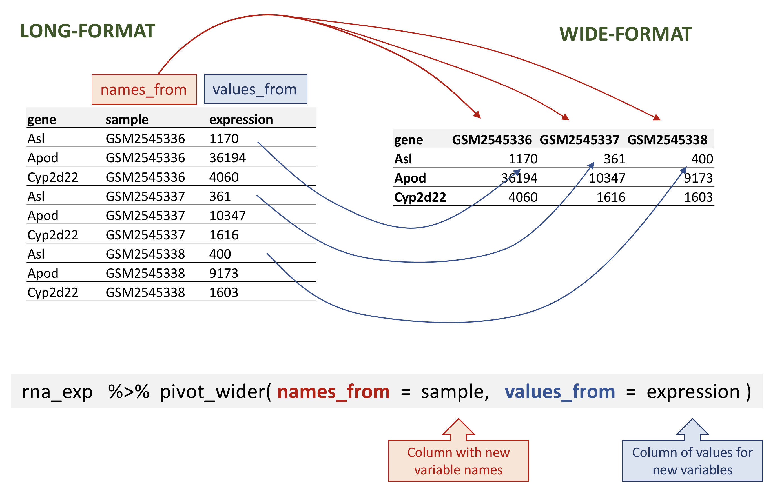
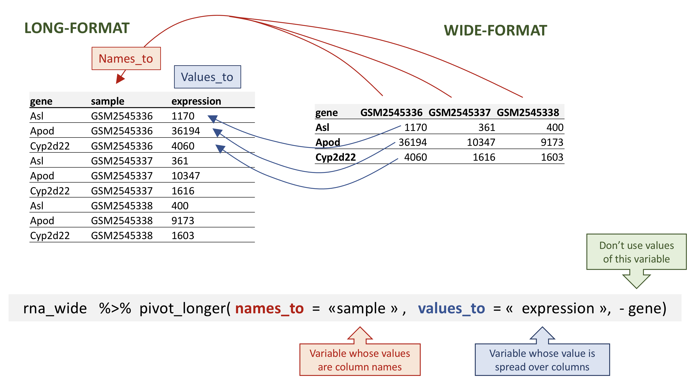

glengths <- c(4.6, 3000, 50000)
glengths <- c(glengths, 90) # adding at the end
glengths <- c(30, glengths) # adding at the beginningSession 2: Functions and Data Wrangling
Functions and their arguments
What are functions?
A key feature of R is functions. Functions are “self contained” modules of code that accomplish a specific task. Functions usually take in some sort of data structure (value, vector, dataframe etc.), process it, and return a result.
The general usage for a function is the name of the function followed by parentheses:
function_name(input)The input(s) are called arguments, which can include:
- the physical object (any data structure) on which the function carries out a task
- specifications that alter the way the function operates (e.g. options)
Not all functions take arguments, for example:
getwd()However, most functions can take several arguments. If you don’t specify a required argument when calling the function, you will either receive an error or the function will fall back on using a default.
The defaults represent standard values that the author of the function specified as being “good enough in standard cases”. An example would be what symbol to use in a plot. However, if you want something specific, simply change the argument yourself with a value of your choice.
Basic functions
We have already used a few examples of basic functions in the previous lessons i.e getwd(), c(), and factor(). These functions are available as part of R’s built in capabilities, and we will explore a few more of these base functions below.
Let’s revisit a function that we have used previously to combine data c() into vectors. The arguments it takes is a collection of numbers, characters or strings (separated by a comma). The c() function performs the task of combining the numbers or characters into a single vector. You can also use the function to add elements to an existing vector:
What happens here is that we take the original vector glengths (containing three elements), and we are adding another item to either end. We can do this over and over again to build a vector or a dataset.
Since R is used for statistical computing, many of the base functions involve mathematical operations. One example would be the function sqrt(). The input/argument must be a number, and the output is the square root of that number. Let’s try finding the square root of 81:
sqrt(81)[1] 9Now what would happen if we called the function (e.g. ran the function), on a vector of values instead of a single value?
sqrt(glengths)[1] 5.477226 2.144761 54.772256 223.606798 9.486833In this case the task was performed on each individual value of the vector glengths and the respective results were displayed.
Let’s try another function, this time using one that we can change some of the options (arguments that change the behavior of the function), for example round:
round(3.14159)[1] 3We can see that we get 3. That’s because the default is to round to the nearest whole number. What if we want a different number of significant digits? Let’s first learn how to find available arguments for a function.
Seeking help on arguments for functions
The best way of finding out this information is to use the ? followed by the name of the function. Doing this will open up the help manual in the bottom right panel of RStudio that will provide a description of the function, usage, arguments, details, and examples:
?roundAlternatively, if you are familiar with the function but just need to remind yourself of the names of the arguments, you can use:
args(round)function (x, digits = 0)
NULLEven more useful is the example() function. This will allow you to run the examples section from the Online Help to see exactly how it works when executing the commands. Let’s try that for round():
example("round")
round> round(.5 + -2:4) # IEEE / IEC rounding: -2 0 0 2 2 4 4
[1] -2 0 0 2 2 4 4
round> ## (this is *good* behaviour -- do *NOT* report it as bug !)
round>
round> ( x1 <- seq(-2, 4, by = .5) )
[1] -2.0 -1.5 -1.0 -0.5 0.0 0.5 1.0 1.5 2.0 2.5 3.0 3.5 4.0
round> round(x1) #-- IEEE / IEC rounding !
[1] -2 -2 -1 0 0 0 1 2 2 2 3 4 4
round> x1[trunc(x1) != floor(x1)]
[1] -1.5 -0.5
round> x1[round(x1) != floor(x1 + .5)]
[1] -1.5 0.5 2.5
round> (non.int <- ceiling(x1) != floor(x1))
[1] FALSE TRUE FALSE TRUE FALSE TRUE FALSE TRUE FALSE TRUE FALSE TRUE
[13] FALSE
round> x2 <- pi * 100^(-1:3)
round> round(x2, 3)
[1] 0.031 3.142 314.159 31415.927 3141592.654
round> signif(x2, 3)
[1] 3.14e-02 3.14e+00 3.14e+02 3.14e+04 3.14e+06In our example, we can change the number of digits returned by adding an argument. We can type digits=2 or however many we may want:
round(3.14159, digits=2)[1] 3.14NOTE: If you provide the arguments in the exact same order as they are defined (in the help manual) you don’t have to name them:
round(3.14159, 2)
However, it’s usually not recommended practice because it involves a lot of memorization. In addition, it makes your code difficult to read for your future self and others, especially if your code includes functions that are not commonly used. (It’s however OK to not include the names of the arguments for basic functions like
mean,min, etc…). Another advantage of naming arguments, is that the order doesn’t matter. This is useful when a function has many arguments.
Exercise
User-defined Functions
One of the great strengths of R is the user’s ability to add functions. Sometimes there is a small task (or series of tasks) you need done and you find yourself having to repeat it multiple times. In these types of situations, it can be helpful to create your own custom function. The structure of a function is given below:
name_of_function <- function(argument1, argument2) {
statements or code that does something
return(something)
}- First you give your function a name.
- Then you assign value to it, where the value is the function.
When defining the function you will want to provide the list of arguments required (inputs and/or options to modify behaviour of the function), and wrapped between curly brackets place the tasks that are being executed on/using those arguments. The argument(s) can be any type of object (like a scalar, a matrix, a dataframe, a vector, a logical, etc), and it’s not necessary to define what it is in any way.
Finally, you can “return” the value of the object from the function, meaning pass the value of it into the global environment. The important idea behind functions is that objects that are created within the function are local to the environment of the function – they don’t exist outside of the function.
Let’s try creating a simple example function. This function will take in a numeric value as input, and return the squared value.
square_it <- function(x) {
square <- x * x
return(square)
}Once you run the code, you should see a function named square_it in the Environment panel (located at the top right of Rstudio interface). Now, we can use this function as any other base R functions. We type out the name of the function, and inside the parentheses we provide a numeric value x:
square_it(5)[1] 25Pretty simple, right? In this case, we only had one line of code that was run, but in theory you could have many lines of code to get obtain the final results that you want to “return” to the user.
Do I always have to
return()something at the end of the function?In the example above, we created a new variable called
squareinside the function, and then return the value ofsquare. If you don’t usereturn(), by default R will return the value of the last line of code inside that function. That is to say, the following function will also work.square_it <- function(x) { x * x }However, we recommend always using
returnat the end of a function as the best practice.
We have only scratched the surface here when it comes to creating functions! We will revisit this in later lessons, but if interested you can also find more detailed information on this R-bloggers site, which is where we adapted this example from.
Exercise
For Loops
Loops are a fundamental structure for repetition in programming. for loops perform the same action for each item in a list of things. The basic syntax is:
for (item in list_of_items) {
do_something(item)
}We can create a vector on the fly to loop a particular number of times:
for (i in 1:5){
print(i)
}[1] 1
[1] 2
[1] 3
[1] 4
[1] 5Or use a pre-existing vector or list.
volumes = c(1.6, 3, 8)
for (volume in volumes){
mass <- 2.65 * volume ^ 0.9
print(mass)
}[1] 4.045329
[1] 7.12287
[1] 17.21975We also might want to loop over indices so we can access multiple vectors.
as <- c(2.65, 1.28, 3.29)
bs <- c(0.9, 1.1, 1.2)
volumes = c(1.6, 3, 8)
masses <- vector(mode="numeric", length=length(volumes))
for (i in 1:length(volumes)){
mass <- as[i] * volumes[i] ^ bs[i]
masses[i] <- mass
}
masses[1] 4.045329 4.285913 39.893660We can use functions inside loops. For example, let’s take a function that returns an estimated mass if the volume > 5 and NA if it’s not.
est_mass <- function(volume, a, b){
if (volume > 5) {
mass <- a * volume ^ b
} else {
mass <- NA
}
return(mass)
}We can then call the function to populate a vector item by item.
masses <- vector(mode="numeric", length=length(volumes))
for (i in 1:length(volumes)){
mass <- est_mass(volumes[i], as[i], bs[i])
masses[i] <- mass
}
masses[1] NA NA 39.89366To note, this is the for loop equivalent of an mapply statement.
masses_apply <- mapply(est_mass, volumes, as, bs)
masses_apply[1] NA NA 39.89366In R we often want to use apply statements as opposed to explicitly writing loops.
Data manipulation using dplyr and tidyr
Bracket subsetting is handy, but it can be cumbersome and difficult to read, especially for complicated operations.
Some packages can greatly facilitate our task when we manipulate data. Packages in R are basically sets of additional functions that let you do more stuff. The functions we’ve been using so far, like str() or data.frame(), come built into R; Loading packages can give you access to other specific functions. Before you use a package for the first time you need to install it on your machine, and then you should import it in every subsequent R session when you need it.
The package
dplyrprovides powerful tools for data manipulation tasks. It is built to work directly with data frames, with many manipulation tasks optimised.As we will see latter on, sometimes we want a data frame to be reshaped to be able to do some specific analyses or for visualisation. The package
tidyraddresses this common problem of reshaping data and provides tools for manipulating data in a tidy way.
To learn more about dplyr and tidyr after the workshop, you may want to check out this handy data transformation with dplyr cheatsheet and this one about tidyr.
- The
tidyversepackage is an “umbrella-package” that installs several useful packages for data analysis which work well together, such astidyr,dplyr,ggplot2,tibble, etc. These packages help us to work and interact with the data. They allow us to do many things with your data, such as subsetting, transforming, visualising, etc.
If you did the set up, you should have already installed the tidyverse package. Check to see if you have it by trying to load in from the library:
## load the tidyverse packages, incl. dplyr
library("tidyverse")If you got an error message there is no package called ‘tidyverse’ then you have not installed the package yet for this version of R. To install the tidyverse package type:
BiocManager::install("tidyverse")If you had to install the tidyverse package, do not forget to load it in this R session by using the library() command above!
Loading data with tidyverse
Instead of read.csv(), we will read in our data using the read_csv() function (notice the _ instead of the .), from the tidyverse package readr.
rna <- read_csv("data/rnaseq.csv")
## view the data
rna# A tibble: 32,428 × 19
gene sample expression organism age sex infection strain time tissue
<chr> <chr> <dbl> <chr> <dbl> <chr> <chr> <chr> <dbl> <chr>
1 Asl GSM254… 1170 Mus mus… 8 Fema… Influenz… C57BL… 8 Cereb…
2 Apod GSM254… 36194 Mus mus… 8 Fema… Influenz… C57BL… 8 Cereb…
3 Cyp2d22 GSM254… 4060 Mus mus… 8 Fema… Influenz… C57BL… 8 Cereb…
4 Klk6 GSM254… 287 Mus mus… 8 Fema… Influenz… C57BL… 8 Cereb…
5 Fcrls GSM254… 85 Mus mus… 8 Fema… Influenz… C57BL… 8 Cereb…
6 Slc2a4 GSM254… 782 Mus mus… 8 Fema… Influenz… C57BL… 8 Cereb…
7 Exd2 GSM254… 1619 Mus mus… 8 Fema… Influenz… C57BL… 8 Cereb…
8 Gjc2 GSM254… 288 Mus mus… 8 Fema… Influenz… C57BL… 8 Cereb…
9 Plp1 GSM254… 43217 Mus mus… 8 Fema… Influenz… C57BL… 8 Cereb…
10 Gnb4 GSM254… 1071 Mus mus… 8 Fema… Influenz… C57BL… 8 Cereb…
# ℹ 32,418 more rows
# ℹ 9 more variables: mouse <dbl>, ENTREZID <dbl>, product <chr>,
# ensembl_gene_id <chr>, external_synonym <chr>, chromosome_name <chr>,
# gene_biotype <chr>, phenotype_description <chr>,
# hsapiens_homolog_associated_gene_name <chr>Notice that the class of the data is now referred to as a “tibble”.
Tibbles tweak some of the behaviors of the data frame objects we introduced in the previously. The data structure is very similar to a data frame. For our purposes the only differences are that:
It displays the data type of each column under its name. Note that <
dbl> is a data type defined to hold numeric values with decimal points.It only prints the first few rows of data and only as many columns as fit on one screen.
We are now going to learn some of the most common dplyr functions:
select(): subset columnsfilter(): subset rows on conditionsmutate(): create new columns by using information from other columnsgroup_by()andsummarise(): create summary statistics on grouped dataarrange(): sort resultscount(): count discrete values
Selecting columns and filtering rows
To select columns of a data frame, use select(). The first argument to this function is the data frame (rna), and the subsequent arguments are the columns to keep.
select(rna, gene, sample, tissue, expression)# A tibble: 32,428 × 4
gene sample tissue expression
<chr> <chr> <chr> <dbl>
1 Asl GSM2545336 Cerebellum 1170
2 Apod GSM2545336 Cerebellum 36194
3 Cyp2d22 GSM2545336 Cerebellum 4060
4 Klk6 GSM2545336 Cerebellum 287
5 Fcrls GSM2545336 Cerebellum 85
6 Slc2a4 GSM2545336 Cerebellum 782
7 Exd2 GSM2545336 Cerebellum 1619
8 Gjc2 GSM2545336 Cerebellum 288
9 Plp1 GSM2545336 Cerebellum 43217
10 Gnb4 GSM2545336 Cerebellum 1071
# ℹ 32,418 more rowsTo select all columns except certain ones, put a “-” in front of the variable to exclude it.
select(rna, -tissue, -organism)# A tibble: 32,428 × 17
gene sample expression age sex infection strain time mouse ENTREZID
<chr> <chr> <dbl> <dbl> <chr> <chr> <chr> <dbl> <dbl> <dbl>
1 Asl GSM2545… 1170 8 Fema… Influenz… C57BL… 8 14 109900
2 Apod GSM2545… 36194 8 Fema… Influenz… C57BL… 8 14 11815
3 Cyp2d22 GSM2545… 4060 8 Fema… Influenz… C57BL… 8 14 56448
4 Klk6 GSM2545… 287 8 Fema… Influenz… C57BL… 8 14 19144
5 Fcrls GSM2545… 85 8 Fema… Influenz… C57BL… 8 14 80891
6 Slc2a4 GSM2545… 782 8 Fema… Influenz… C57BL… 8 14 20528
7 Exd2 GSM2545… 1619 8 Fema… Influenz… C57BL… 8 14 97827
8 Gjc2 GSM2545… 288 8 Fema… Influenz… C57BL… 8 14 118454
9 Plp1 GSM2545… 43217 8 Fema… Influenz… C57BL… 8 14 18823
10 Gnb4 GSM2545… 1071 8 Fema… Influenz… C57BL… 8 14 14696
# ℹ 32,418 more rows
# ℹ 7 more variables: product <chr>, ensembl_gene_id <chr>,
# external_synonym <chr>, chromosome_name <chr>, gene_biotype <chr>,
# phenotype_description <chr>, hsapiens_homolog_associated_gene_name <chr>This will select all the variables in rna except tissue and organism.
To choose rows based on a specific criteria, use filter():
filter(rna, sex == "Male")# A tibble: 14,740 × 19
gene sample expression organism age sex infection strain time tissue
<chr> <chr> <dbl> <chr> <dbl> <chr> <chr> <chr> <dbl> <chr>
1 Asl GSM254… 626 Mus mus… 8 Male Influenz… C57BL… 4 Cereb…
2 Apod GSM254… 13021 Mus mus… 8 Male Influenz… C57BL… 4 Cereb…
3 Cyp2d22 GSM254… 2171 Mus mus… 8 Male Influenz… C57BL… 4 Cereb…
4 Klk6 GSM254… 448 Mus mus… 8 Male Influenz… C57BL… 4 Cereb…
5 Fcrls GSM254… 180 Mus mus… 8 Male Influenz… C57BL… 4 Cereb…
6 Slc2a4 GSM254… 313 Mus mus… 8 Male Influenz… C57BL… 4 Cereb…
7 Exd2 GSM254… 2366 Mus mus… 8 Male Influenz… C57BL… 4 Cereb…
8 Gjc2 GSM254… 310 Mus mus… 8 Male Influenz… C57BL… 4 Cereb…
9 Plp1 GSM254… 53126 Mus mus… 8 Male Influenz… C57BL… 4 Cereb…
10 Gnb4 GSM254… 1355 Mus mus… 8 Male Influenz… C57BL… 4 Cereb…
# ℹ 14,730 more rows
# ℹ 9 more variables: mouse <dbl>, ENTREZID <dbl>, product <chr>,
# ensembl_gene_id <chr>, external_synonym <chr>, chromosome_name <chr>,
# gene_biotype <chr>, phenotype_description <chr>,
# hsapiens_homolog_associated_gene_name <chr>filter(rna, sex == "Male" & infection == "NonInfected")# A tibble: 4,422 × 19
gene sample expression organism age sex infection strain time tissue
<chr> <chr> <dbl> <chr> <dbl> <chr> <chr> <chr> <dbl> <chr>
1 Asl GSM254… 535 Mus mus… 8 Male NonInfec… C57BL… 0 Cereb…
2 Apod GSM254… 13668 Mus mus… 8 Male NonInfec… C57BL… 0 Cereb…
3 Cyp2d22 GSM254… 2008 Mus mus… 8 Male NonInfec… C57BL… 0 Cereb…
4 Klk6 GSM254… 1101 Mus mus… 8 Male NonInfec… C57BL… 0 Cereb…
5 Fcrls GSM254… 375 Mus mus… 8 Male NonInfec… C57BL… 0 Cereb…
6 Slc2a4 GSM254… 249 Mus mus… 8 Male NonInfec… C57BL… 0 Cereb…
7 Exd2 GSM254… 3126 Mus mus… 8 Male NonInfec… C57BL… 0 Cereb…
8 Gjc2 GSM254… 791 Mus mus… 8 Male NonInfec… C57BL… 0 Cereb…
9 Plp1 GSM254… 98658 Mus mus… 8 Male NonInfec… C57BL… 0 Cereb…
10 Gnb4 GSM254… 2437 Mus mus… 8 Male NonInfec… C57BL… 0 Cereb…
# ℹ 4,412 more rows
# ℹ 9 more variables: mouse <dbl>, ENTREZID <dbl>, product <chr>,
# ensembl_gene_id <chr>, external_synonym <chr>, chromosome_name <chr>,
# gene_biotype <chr>, phenotype_description <chr>,
# hsapiens_homolog_associated_gene_name <chr>Now let’s imagine we are interested in the human homologs of the mouse genes analysed in this dataset. This information can be found in the last column of the rna tibble, named hsapiens_homolog_associated_gene_name. To visualise it easily, we will create a new table containing just the 2 columns gene and hsapiens_homolog_associated_gene_name.
genes <- select(rna, gene, hsapiens_homolog_associated_gene_name)
genes# A tibble: 32,428 × 2
gene hsapiens_homolog_associated_gene_name
<chr> <chr>
1 Asl ASL
2 Apod APOD
3 Cyp2d22 CYP2D6
4 Klk6 KLK6
5 Fcrls FCRL2
6 Slc2a4 SLC2A4
7 Exd2 EXD2
8 Gjc2 GJC2
9 Plp1 PLP1
10 Gnb4 GNB4
# ℹ 32,418 more rowsSome mouse genes have no human homologs. These can be retrieved using filter() and the is.na() function, that determines whether something is an NA.
filter(genes, is.na(hsapiens_homolog_associated_gene_name))# A tibble: 4,290 × 2
gene hsapiens_homolog_associated_gene_name
<chr> <chr>
1 Prodh <NA>
2 Tssk5 <NA>
3 Vmn2r1 <NA>
4 Gm10654 <NA>
5 Hexa <NA>
6 Sult1a1 <NA>
7 Gm6277 <NA>
8 Tmem198b <NA>
9 Adam1a <NA>
10 Ebp <NA>
# ℹ 4,280 more rowsIf we want to keep only mouse genes that have a human homolog, we can insert a “!” symbol that negates the result, so we’re asking for every row where hsapiens_homolog_associated_gene_name is not an NA.
filter(genes, !is.na(hsapiens_homolog_associated_gene_name))# A tibble: 28,138 × 2
gene hsapiens_homolog_associated_gene_name
<chr> <chr>
1 Asl ASL
2 Apod APOD
3 Cyp2d22 CYP2D6
4 Klk6 KLK6
5 Fcrls FCRL2
6 Slc2a4 SLC2A4
7 Exd2 EXD2
8 Gjc2 GJC2
9 Plp1 PLP1
10 Gnb4 GNB4
# ℹ 28,128 more rowsPipes
What if you want to select and filter at the same time? There are three ways to do this: use intermediate steps, nested functions, or pipes.
With intermediate steps, you create a temporary data frame and use that as input to the next function, like this:
rna2 <- filter(rna, sex == "Male")
rna3 <- select(rna2, gene, sample, tissue, expression)
rna3# A tibble: 14,740 × 4
gene sample tissue expression
<chr> <chr> <chr> <dbl>
1 Asl GSM2545340 Cerebellum 626
2 Apod GSM2545340 Cerebellum 13021
3 Cyp2d22 GSM2545340 Cerebellum 2171
4 Klk6 GSM2545340 Cerebellum 448
5 Fcrls GSM2545340 Cerebellum 180
6 Slc2a4 GSM2545340 Cerebellum 313
7 Exd2 GSM2545340 Cerebellum 2366
8 Gjc2 GSM2545340 Cerebellum 310
9 Plp1 GSM2545340 Cerebellum 53126
10 Gnb4 GSM2545340 Cerebellum 1355
# ℹ 14,730 more rowsThis is readable, but can clutter up your workspace with lots of intermediate objects that you have to name individually. With multiple steps, that can be hard to keep track of.
You can also nest functions (i.e. one function inside of another), like this:
rna3 <- select(filter(rna, sex == "Male"), gene, sample, tissue, expression)
rna3# A tibble: 14,740 × 4
gene sample tissue expression
<chr> <chr> <chr> <dbl>
1 Asl GSM2545340 Cerebellum 626
2 Apod GSM2545340 Cerebellum 13021
3 Cyp2d22 GSM2545340 Cerebellum 2171
4 Klk6 GSM2545340 Cerebellum 448
5 Fcrls GSM2545340 Cerebellum 180
6 Slc2a4 GSM2545340 Cerebellum 313
7 Exd2 GSM2545340 Cerebellum 2366
8 Gjc2 GSM2545340 Cerebellum 310
9 Plp1 GSM2545340 Cerebellum 53126
10 Gnb4 GSM2545340 Cerebellum 1355
# ℹ 14,730 more rowsThis is handy, but can be difficult to read if too many functions are nested, as R evaluates the expression from the inside out (in this case, filtering, then selecting).
The last option, pipes, are a recent addition to R. Pipes let you take the output of one function and send it directly to the next, which is useful when you need to do many things to the same dataset.
Pipes in R look like %>% (made available via the magrittr package) or |> (through base R). If you use RStudio, you can type the pipe with Ctrl + Shift + M if you have a PC or Cmd + Shift + M if you have a Mac.
In the above code, we use the pipe to send the rna dataset first through filter() to keep rows where sex is Male, then through select() to keep only the gene, sample, tissue, and expressioncolumns.
The pipe %>% takes the object on its left and passes it directly as the first argument to the function on its right, we don’t need to explicitly include the data frame as an argument to the filter() and select() functions any more.
rna %>%
filter(sex == "Male") %>%
select(gene, sample, tissue, expression)# A tibble: 14,740 × 4
gene sample tissue expression
<chr> <chr> <chr> <dbl>
1 Asl GSM2545340 Cerebellum 626
2 Apod GSM2545340 Cerebellum 13021
3 Cyp2d22 GSM2545340 Cerebellum 2171
4 Klk6 GSM2545340 Cerebellum 448
5 Fcrls GSM2545340 Cerebellum 180
6 Slc2a4 GSM2545340 Cerebellum 313
7 Exd2 GSM2545340 Cerebellum 2366
8 Gjc2 GSM2545340 Cerebellum 310
9 Plp1 GSM2545340 Cerebellum 53126
10 Gnb4 GSM2545340 Cerebellum 1355
# ℹ 14,730 more rowsSome may find it helpful to read the pipe like the word “then”. For instance, in the above example, we took the data frame rna, then we filtered for rows with sex == "Male", then we selected columns gene, sample, tissue, and expression.
The dplyr functions by themselves are somewhat simple, but by combining them into linear workflows with the pipe, we can accomplish more complex manipulations of data frames.
If we want to create a new object with this smaller version of the data, we can assign it a new name:
rna3 <- rna %>%
filter(sex == "Male") %>%
select(gene, sample, tissue, expression)
rna3# A tibble: 14,740 × 4
gene sample tissue expression
<chr> <chr> <chr> <dbl>
1 Asl GSM2545340 Cerebellum 626
2 Apod GSM2545340 Cerebellum 13021
3 Cyp2d22 GSM2545340 Cerebellum 2171
4 Klk6 GSM2545340 Cerebellum 448
5 Fcrls GSM2545340 Cerebellum 180
6 Slc2a4 GSM2545340 Cerebellum 313
7 Exd2 GSM2545340 Cerebellum 2366
8 Gjc2 GSM2545340 Cerebellum 310
9 Plp1 GSM2545340 Cerebellum 53126
10 Gnb4 GSM2545340 Cerebellum 1355
# ℹ 14,730 more rowsMutate
Frequently you’ll want to create new columns based on the values of existing columns, for example to do unit conversions, or to find the ratio of values in two columns. For this we’ll use mutate().
To create a new column of time in hours:
rna %>%
mutate(time_hours = time * 24) %>%
select(time, time_hours)# A tibble: 32,428 × 2
time time_hours
<dbl> <dbl>
1 8 192
2 8 192
3 8 192
4 8 192
5 8 192
6 8 192
7 8 192
8 8 192
9 8 192
10 8 192
# ℹ 32,418 more rowsYou can also create a second new column based on the first new column within the same call of mutate():
rna %>%
mutate(time_hours = time * 24,
time_mn = time_hours * 60) %>%
select(time, time_hours, time_mn)# A tibble: 32,428 × 3
time time_hours time_mn
<dbl> <dbl> <dbl>
1 8 192 11520
2 8 192 11520
3 8 192 11520
4 8 192 11520
5 8 192 11520
6 8 192 11520
7 8 192 11520
8 8 192 11520
9 8 192 11520
10 8 192 11520
# ℹ 32,418 more rowsSplit-apply-combine data analysis
Many data analysis tasks can be approached using the split-apply-combine paradigm: split the data into groups, apply some analysis to each group, and then combine the results. dplyr makes this very easy through the use of the group_by() function.
rna %>%
group_by(gene)# A tibble: 32,428 × 19
# Groups: gene [1,474]
gene sample expression organism age sex infection strain time tissue
<chr> <chr> <dbl> <chr> <dbl> <chr> <chr> <chr> <dbl> <chr>
1 Asl GSM254… 1170 Mus mus… 8 Fema… Influenz… C57BL… 8 Cereb…
2 Apod GSM254… 36194 Mus mus… 8 Fema… Influenz… C57BL… 8 Cereb…
3 Cyp2d22 GSM254… 4060 Mus mus… 8 Fema… Influenz… C57BL… 8 Cereb…
4 Klk6 GSM254… 287 Mus mus… 8 Fema… Influenz… C57BL… 8 Cereb…
5 Fcrls GSM254… 85 Mus mus… 8 Fema… Influenz… C57BL… 8 Cereb…
6 Slc2a4 GSM254… 782 Mus mus… 8 Fema… Influenz… C57BL… 8 Cereb…
7 Exd2 GSM254… 1619 Mus mus… 8 Fema… Influenz… C57BL… 8 Cereb…
8 Gjc2 GSM254… 288 Mus mus… 8 Fema… Influenz… C57BL… 8 Cereb…
9 Plp1 GSM254… 43217 Mus mus… 8 Fema… Influenz… C57BL… 8 Cereb…
10 Gnb4 GSM254… 1071 Mus mus… 8 Fema… Influenz… C57BL… 8 Cereb…
# ℹ 32,418 more rows
# ℹ 9 more variables: mouse <dbl>, ENTREZID <dbl>, product <chr>,
# ensembl_gene_id <chr>, external_synonym <chr>, chromosome_name <chr>,
# gene_biotype <chr>, phenotype_description <chr>,
# hsapiens_homolog_associated_gene_name <chr>The group_by() function doesn’t perform any data processing, it groups the data into subsets: in the example above, our initial tibble of 32428 observations is split into 1474 groups based on the gene variable.
We could similarly decide to group the tibble by the samples:
rna %>%
group_by(sample)# A tibble: 32,428 × 19
# Groups: sample [22]
gene sample expression organism age sex infection strain time tissue
<chr> <chr> <dbl> <chr> <dbl> <chr> <chr> <chr> <dbl> <chr>
1 Asl GSM254… 1170 Mus mus… 8 Fema… Influenz… C57BL… 8 Cereb…
2 Apod GSM254… 36194 Mus mus… 8 Fema… Influenz… C57BL… 8 Cereb…
3 Cyp2d22 GSM254… 4060 Mus mus… 8 Fema… Influenz… C57BL… 8 Cereb…
4 Klk6 GSM254… 287 Mus mus… 8 Fema… Influenz… C57BL… 8 Cereb…
5 Fcrls GSM254… 85 Mus mus… 8 Fema… Influenz… C57BL… 8 Cereb…
6 Slc2a4 GSM254… 782 Mus mus… 8 Fema… Influenz… C57BL… 8 Cereb…
7 Exd2 GSM254… 1619 Mus mus… 8 Fema… Influenz… C57BL… 8 Cereb…
8 Gjc2 GSM254… 288 Mus mus… 8 Fema… Influenz… C57BL… 8 Cereb…
9 Plp1 GSM254… 43217 Mus mus… 8 Fema… Influenz… C57BL… 8 Cereb…
10 Gnb4 GSM254… 1071 Mus mus… 8 Fema… Influenz… C57BL… 8 Cereb…
# ℹ 32,418 more rows
# ℹ 9 more variables: mouse <dbl>, ENTREZID <dbl>, product <chr>,
# ensembl_gene_id <chr>, external_synonym <chr>, chromosome_name <chr>,
# gene_biotype <chr>, phenotype_description <chr>,
# hsapiens_homolog_associated_gene_name <chr>Here our initial tibble of 32428 observations is split into 22 groups based on the sample variable.
Once the data has been grouped, subsequent operations will be applied on each group independently.
The summarise() function
group_by() is often used together with summarise(), which collapses each group into a single-row summary of that group.
group_by() takes as arguments the column names that contain the categorical variables for which you want to calculate the summary statistics. So to compute the mean expression by gene:
rna %>%
group_by(gene) %>%
summarise(mean_expression = mean(expression))# A tibble: 1,474 × 2
gene mean_expression
<chr> <dbl>
1 AI504432 1053.
2 AW046200 131.
3 AW551984 295.
4 Aamp 4751.
5 Abca12 4.55
6 Abcc8 2498.
7 Abhd14a 525.
8 Abi2 4909.
9 Abi3bp 1002.
10 Abl2 2124.
# ℹ 1,464 more rowsWe could also want to calculate the mean expression levels of all genes in each sample:
rna %>%
group_by(sample) %>%
summarise(mean_expression = mean(expression))# A tibble: 22 × 2
sample mean_expression
<chr> <dbl>
1 GSM2545336 2062.
2 GSM2545337 1766.
3 GSM2545338 1668.
4 GSM2545339 1696.
5 GSM2545340 1682.
6 GSM2545341 1638.
7 GSM2545342 1594.
8 GSM2545343 2107.
9 GSM2545344 1712.
10 GSM2545345 1700.
# ℹ 12 more rowsBut we can can also group by multiple columns:
rna %>%
group_by(gene, infection, time) %>%
summarise(mean_expression = mean(expression))`summarise()` has grouped output by 'gene', 'infection'. You can override using
the `.groups` argument.# A tibble: 4,422 × 4
# Groups: gene, infection [2,948]
gene infection time mean_expression
<chr> <chr> <dbl> <dbl>
1 AI504432 InfluenzaA 4 1104.
2 AI504432 InfluenzaA 8 1014
3 AI504432 NonInfected 0 1034.
4 AW046200 InfluenzaA 4 152.
5 AW046200 InfluenzaA 8 81
6 AW046200 NonInfected 0 155.
7 AW551984 InfluenzaA 4 302.
8 AW551984 InfluenzaA 8 342.
9 AW551984 NonInfected 0 238
10 Aamp InfluenzaA 4 4870
# ℹ 4,412 more rowsOnce the data is grouped, you can also summarise multiple variables at the same time (and not necessarily on the same variable). For instance, we could add a column indicating the median expression by gene and by condition:
rna %>%
group_by(gene, infection, time) %>%
summarise(mean_expression = mean(expression),
median_expression = median(expression))`summarise()` has grouped output by 'gene', 'infection'. You can override using
the `.groups` argument.# A tibble: 4,422 × 5
# Groups: gene, infection [2,948]
gene infection time mean_expression median_expression
<chr> <chr> <dbl> <dbl> <dbl>
1 AI504432 InfluenzaA 4 1104. 1094.
2 AI504432 InfluenzaA 8 1014 985
3 AI504432 NonInfected 0 1034. 1016
4 AW046200 InfluenzaA 4 152. 144.
5 AW046200 InfluenzaA 8 81 82
6 AW046200 NonInfected 0 155. 163
7 AW551984 InfluenzaA 4 302. 245
8 AW551984 InfluenzaA 8 342. 287
9 AW551984 NonInfected 0 238 265
10 Aamp InfluenzaA 4 4870 4708
# ℹ 4,412 more rowsCounting
When working with data, we often want to know the number of observations found for each factor or combination of factors. For this task, dplyr provides count(). For example, if we wanted to count the number of rows of data for each infected and non-infected samples, we would do:
rna %>%
count(infection)# A tibble: 2 × 2
infection n
<chr> <int>
1 InfluenzaA 22110
2 NonInfected 10318The count() function is shorthand for something we’ve already seen: grouping by a variable, and summarising it by counting the number of observations in that group. In other words, rna %>% count(infection) is equivalent to:
rna %>%
group_by(infection) %>%
summarise(n = n())# A tibble: 2 × 2
infection n
<chr> <int>
1 InfluenzaA 22110
2 NonInfected 10318The previous example shows the use of count() to count the number of rows/observations for one factor (i.e., infection). If we wanted to count a combination of factors, such as infection and time, we would specify the first and the second factor as the arguments of count():
rna %>%
count(infection, time)# A tibble: 3 × 3
infection time n
<chr> <dbl> <int>
1 InfluenzaA 4 11792
2 InfluenzaA 8 10318
3 NonInfected 0 10318which is equivalent to this:
rna %>%
group_by(infection, time) %>%
summarise(n = n())`summarise()` has grouped output by 'infection'. You can override using the
`.groups` argument.# A tibble: 3 × 3
# Groups: infection [2]
infection time n
<chr> <dbl> <int>
1 InfluenzaA 4 11792
2 InfluenzaA 8 10318
3 NonInfected 0 10318It is sometimes useful to sort the result to facilitate the comparisons. We can use arrange() to sort the table. For instance, we might want to arrange the table above by time:
rna %>%
count(infection, time) %>%
arrange(time)# A tibble: 3 × 3
infection time n
<chr> <dbl> <int>
1 NonInfected 0 10318
2 InfluenzaA 4 11792
3 InfluenzaA 8 10318or by counts:
rna %>%
count(infection, time) %>%
arrange(n)# A tibble: 3 × 3
infection time n
<chr> <dbl> <int>
1 InfluenzaA 8 10318
2 NonInfected 0 10318
3 InfluenzaA 4 11792To sort in descending order, we need to add the desc() function:
rna %>%
count(infection, time) %>%
arrange(desc(n))# A tibble: 3 × 3
infection time n
<chr> <dbl> <int>
1 InfluenzaA 4 11792
2 InfluenzaA 8 10318
3 NonInfected 0 10318Reshaping data
In the rna tibble, the rows contain expression values (the unit) that are associated with a combination of 2 other variables: gene and sample.
All the other columns correspond to variables describing either the sample (organism, age, sex, …) or the gene (gene_biotype, ENTREZ_ID, product, …). The variables that don’t change with genes or with samples will have the same value in all the rows.
rna %>%
arrange(gene)# A tibble: 32,428 × 19
gene sample expression organism age sex infection strain time tissue
<chr> <chr> <dbl> <chr> <dbl> <chr> <chr> <chr> <dbl> <chr>
1 AI504432 GSM25… 1230 Mus mus… 8 Fema… Influenz… C57BL… 8 Cereb…
2 AI504432 GSM25… 1085 Mus mus… 8 Fema… NonInfec… C57BL… 0 Cereb…
3 AI504432 GSM25… 969 Mus mus… 8 Fema… NonInfec… C57BL… 0 Cereb…
4 AI504432 GSM25… 1284 Mus mus… 8 Fema… Influenz… C57BL… 4 Cereb…
5 AI504432 GSM25… 966 Mus mus… 8 Male Influenz… C57BL… 4 Cereb…
6 AI504432 GSM25… 918 Mus mus… 8 Male Influenz… C57BL… 8 Cereb…
7 AI504432 GSM25… 985 Mus mus… 8 Fema… Influenz… C57BL… 8 Cereb…
8 AI504432 GSM25… 972 Mus mus… 8 Male NonInfec… C57BL… 0 Cereb…
9 AI504432 GSM25… 1000 Mus mus… 8 Fema… Influenz… C57BL… 4 Cereb…
10 AI504432 GSM25… 816 Mus mus… 8 Male Influenz… C57BL… 4 Cereb…
# ℹ 32,418 more rows
# ℹ 9 more variables: mouse <dbl>, ENTREZID <dbl>, product <chr>,
# ensembl_gene_id <chr>, external_synonym <chr>, chromosome_name <chr>,
# gene_biotype <chr>, phenotype_description <chr>,
# hsapiens_homolog_associated_gene_name <chr>This structure is called a long-format, as one column contains all the values, and other column(s) list(s) the context of the value.
In certain cases, the long-format is not really “human-readable”, and another format, a wide-format is preferred, as a more compact way of representing the data. This is typically the case with gene expression values that scientists are used to look as matrices, were rows represent genes and columns represent samples.
In this format, it would therefore become straightforward to explore the relationship between the gene expression levels within, and between, the samples.
# A tibble: 1,474 × 23
gene GSM2545336 GSM2545337 GSM2545338 GSM2545339 GSM2545340 GSM2545341
<chr> <dbl> <dbl> <dbl> <dbl> <dbl> <dbl>
1 Asl 1170 361 400 586 626 988
2 Apod 36194 10347 9173 10620 13021 29594
3 Cyp2d22 4060 1616 1603 1901 2171 3349
4 Klk6 287 629 641 578 448 195
5 Fcrls 85 233 244 237 180 38
6 Slc2a4 782 231 248 265 313 786
7 Exd2 1619 2288 2235 2513 2366 1359
8 Gjc2 288 595 568 551 310 146
9 Plp1 43217 101241 96534 58354 53126 27173
10 Gnb4 1071 1791 1867 1430 1355 798
# ℹ 1,464 more rows
# ℹ 16 more variables: GSM2545342 <dbl>, GSM2545343 <dbl>, GSM2545344 <dbl>,
# GSM2545345 <dbl>, GSM2545346 <dbl>, GSM2545347 <dbl>, GSM2545348 <dbl>,
# GSM2545349 <dbl>, GSM2545350 <dbl>, GSM2545351 <dbl>, GSM2545352 <dbl>,
# GSM2545353 <dbl>, GSM2545354 <dbl>, GSM2545362 <dbl>, GSM2545363 <dbl>,
# GSM2545380 <dbl>To convert the gene expression values from rna into a wide-format, we need to create a new table where the values of the sample column would become the names of column variables.
The key point here is that we are still following a tidy data structure, but we have reshaped the data according to the observations of interest: expression levels per gene instead of recording them per gene and per sample.
The opposite transformation would be to transform column names into values of a new variable.
We can do both these of transformations with two tidyr functions, pivot_longer() and pivot_wider() (see here for details).
Pivoting the data into a wider format
Let’s select the first 3 columns of rna and use pivot_wider() to transform the data into a wide-format.
rna_exp <- rna %>%
select(gene, sample, expression)
rna_exp# A tibble: 32,428 × 3
gene sample expression
<chr> <chr> <dbl>
1 Asl GSM2545336 1170
2 Apod GSM2545336 36194
3 Cyp2d22 GSM2545336 4060
4 Klk6 GSM2545336 287
5 Fcrls GSM2545336 85
6 Slc2a4 GSM2545336 782
7 Exd2 GSM2545336 1619
8 Gjc2 GSM2545336 288
9 Plp1 GSM2545336 43217
10 Gnb4 GSM2545336 1071
# ℹ 32,418 more rowspivot_wider takes three main arguments:
- the data to be transformed;
- the
names_from: the column whose values will become new column names; - the
values_from: the column whose values will fill the new columns.

rna data.rna_wide <- rna_exp %>%
pivot_wider(names_from = sample,
values_from = expression)
rna_wide# A tibble: 1,474 × 23
gene GSM2545336 GSM2545337 GSM2545338 GSM2545339 GSM2545340 GSM2545341
<chr> <dbl> <dbl> <dbl> <dbl> <dbl> <dbl>
1 Asl 1170 361 400 586 626 988
2 Apod 36194 10347 9173 10620 13021 29594
3 Cyp2d22 4060 1616 1603 1901 2171 3349
4 Klk6 287 629 641 578 448 195
5 Fcrls 85 233 244 237 180 38
6 Slc2a4 782 231 248 265 313 786
7 Exd2 1619 2288 2235 2513 2366 1359
8 Gjc2 288 595 568 551 310 146
9 Plp1 43217 101241 96534 58354 53126 27173
10 Gnb4 1071 1791 1867 1430 1355 798
# ℹ 1,464 more rows
# ℹ 16 more variables: GSM2545342 <dbl>, GSM2545343 <dbl>, GSM2545344 <dbl>,
# GSM2545345 <dbl>, GSM2545346 <dbl>, GSM2545347 <dbl>, GSM2545348 <dbl>,
# GSM2545349 <dbl>, GSM2545350 <dbl>, GSM2545351 <dbl>, GSM2545352 <dbl>,
# GSM2545353 <dbl>, GSM2545354 <dbl>, GSM2545362 <dbl>, GSM2545363 <dbl>,
# GSM2545380 <dbl>Note that by default, the pivot_wider() function will add NA for missing values.
Let’s imagine that for some reason, we had some missing expression values for some genes in certain samples. In the following fictive example, the gene Cyp2d22 has only one expression value, in GSM2545338 sample.
rna_with_missing_values# A tibble: 7 × 3
gene sample expression
<chr> <chr> <dbl>
1 Asl GSM2545336 1170
2 Apod GSM2545336 36194
3 Asl GSM2545337 361
4 Apod GSM2545337 10347
5 Asl GSM2545338 400
6 Apod GSM2545338 9173
7 Cyp2d22 GSM2545338 1603By default, the pivot_wider() function will add NA for missing values. This can be parameterised with the values_fill argument of the pivot_wider() function.
rna_with_missing_values %>%
pivot_wider(names_from = sample,
values_from = expression)# A tibble: 3 × 4
gene GSM2545336 GSM2545337 GSM2545338
<chr> <dbl> <dbl> <dbl>
1 Asl 1170 361 400
2 Apod 36194 10347 9173
3 Cyp2d22 NA NA 1603rna_with_missing_values %>%
pivot_wider(names_from = sample,
values_from = expression,
values_fill = 0)# A tibble: 3 × 4
gene GSM2545336 GSM2545337 GSM2545338
<chr> <dbl> <dbl> <dbl>
1 Asl 1170 361 400
2 Apod 36194 10347 9173
3 Cyp2d22 0 0 1603Pivoting data into a longer format
In the opposite situation we are using the column names and turning them into a pair of new variables. One variable represents the column names as values, and the other variable contains the values previously associated with the column names.
pivot_longer() takes four main arguments:
- the data to be transformed;
- the
names_to: the new column name we wish to create and populate with the current column names; - the
values_to: the new column name we wish to create and populate with current values; - the names of the columns to be used to populate the
names_toandvalues_tovariables (or to drop).

rna data.To recreate rna_long from rna_wide we would create a key called sample and value called expression and use all columns except gene for the key variable. Here we drop gene column with a minus sign.
Notice how the new variable names are to be quoted here.
rna_long <- rna_wide %>%
pivot_longer(names_to = "sample",
values_to = "expression",
-gene)
rna_long# A tibble: 32,428 × 3
gene sample expression
<chr> <chr> <dbl>
1 Asl GSM2545336 1170
2 Asl GSM2545337 361
3 Asl GSM2545338 400
4 Asl GSM2545339 586
5 Asl GSM2545340 626
6 Asl GSM2545341 988
7 Asl GSM2545342 836
8 Asl GSM2545343 535
9 Asl GSM2545344 586
10 Asl GSM2545345 597
# ℹ 32,418 more rowsWe could also have used a specification for what columns to include. This can be useful if you have a large number of identifying columns, and it’s easier to specify what to gather than what to leave alone. Here the starts_with() function can help to retrieve sample names without having to list them all! Another possibility would be to use the : operator!
rna_wide %>%
pivot_longer(names_to = "sample",
values_to = "expression",
cols = starts_with("GSM"))# A tibble: 32,428 × 3
gene sample expression
<chr> <chr> <dbl>
1 Asl GSM2545336 1170
2 Asl GSM2545337 361
3 Asl GSM2545338 400
4 Asl GSM2545339 586
5 Asl GSM2545340 626
6 Asl GSM2545341 988
7 Asl GSM2545342 836
8 Asl GSM2545343 535
9 Asl GSM2545344 586
10 Asl GSM2545345 597
# ℹ 32,418 more rowsrna_wide %>%
pivot_longer(names_to = "sample",
values_to = "expression",
GSM2545336:GSM2545380)# A tibble: 32,428 × 3
gene sample expression
<chr> <chr> <dbl>
1 Asl GSM2545336 1170
2 Asl GSM2545337 361
3 Asl GSM2545338 400
4 Asl GSM2545339 586
5 Asl GSM2545340 626
6 Asl GSM2545341 988
7 Asl GSM2545342 836
8 Asl GSM2545343 535
9 Asl GSM2545344 586
10 Asl GSM2545345 597
# ℹ 32,418 more rowsNote that if we had missing values in the wide-format, the NA would be included in the new long format.
Remember our previous fictive tibble containing missing values:
rna_with_missing_values# A tibble: 7 × 3
gene sample expression
<chr> <chr> <dbl>
1 Asl GSM2545336 1170
2 Apod GSM2545336 36194
3 Asl GSM2545337 361
4 Apod GSM2545337 10347
5 Asl GSM2545338 400
6 Apod GSM2545338 9173
7 Cyp2d22 GSM2545338 1603wide_with_NA <- rna_with_missing_values %>%
pivot_wider(names_from = sample,
values_from = expression)
wide_with_NA# A tibble: 3 × 4
gene GSM2545336 GSM2545337 GSM2545338
<chr> <dbl> <dbl> <dbl>
1 Asl 1170 361 400
2 Apod 36194 10347 9173
3 Cyp2d22 NA NA 1603wide_with_NA %>%
pivot_longer(names_to = "sample",
values_to = "expression",
-gene)# A tibble: 9 × 3
gene sample expression
<chr> <chr> <dbl>
1 Asl GSM2545336 1170
2 Asl GSM2545337 361
3 Asl GSM2545338 400
4 Apod GSM2545336 36194
5 Apod GSM2545337 10347
6 Apod GSM2545338 9173
7 Cyp2d22 GSM2545336 NA
8 Cyp2d22 GSM2545337 NA
9 Cyp2d22 GSM2545338 1603Pivoting to wider and longer formats can be a useful way to balance out a dataset so every replicate has the same composition.
Question
Subset genes located on X and Y chromosomes from the rna data frame and spread the data frame with sex as columns, chromosome_name as rows, and the mean expression of genes located in each chromosome as the values, as in the following tibble:

You will need to summarise before reshaping!
Joining tables
In many real life situations, data are spread across multiple tables. Usually this occurs because different types of information are collected from different sources.
It may be desirable for some analyses to combine data from two or more tables into a single data frame based on a column that would be common to all the tables.
The dplyr package provides a set of join functions for combining two data frames based on matches within specified columns. Here, we provide a short introduction to joins. The Data Transformation Cheat Sheet also provides a short overview on table joins.
We are going to illustrate join using a small table, rna_mini that we will create by subsetting the original rna table, keeping only 3 columns and 10 lines.
rna_mini <- rna %>%
select(gene, sample, expression) %>%
head(10)
rna_mini# A tibble: 10 × 3
gene sample expression
<chr> <chr> <dbl>
1 Asl GSM2545336 1170
2 Apod GSM2545336 36194
3 Cyp2d22 GSM2545336 4060
4 Klk6 GSM2545336 287
5 Fcrls GSM2545336 85
6 Slc2a4 GSM2545336 782
7 Exd2 GSM2545336 1619
8 Gjc2 GSM2545336 288
9 Plp1 GSM2545336 43217
10 Gnb4 GSM2545336 1071The second table, annot1, contains 2 columns, gene and gene_description.
annot1 <- read_csv(file = "data/annot1.csv")
annot1# A tibble: 10 × 2
gene gene_description
<chr> <chr>
1 Cyp2d22 cytochrome P450, family 2, subfamily d, polypeptide 22 [Source:MGI S…
2 Klk6 kallikrein related-peptidase 6 [Source:MGI Symbol;Acc:MGI:1343166]
3 Fcrls Fc receptor-like S, scavenger receptor [Source:MGI Symbol;Acc:MGI:19…
4 Plp1 proteolipid protein (myelin) 1 [Source:MGI Symbol;Acc:MGI:97623]
5 Exd2 exonuclease 3'-5' domain containing 2 [Source:MGI Symbol;Acc:MGI:192…
6 Apod apolipoprotein D [Source:MGI Symbol;Acc:MGI:88056]
7 Gnb4 guanine nucleotide binding protein (G protein), beta 4 [Source:MGI S…
8 Slc2a4 solute carrier family 2 (facilitated glucose transporter), member 4 …
9 Asl argininosuccinate lyase [Source:MGI Symbol;Acc:MGI:88084]
10 Gjc2 gap junction protein, gamma 2 [Source:MGI Symbol;Acc:MGI:2153060] We now want to join these two tables into a single one containing all variables using the full_join() function from the dplyr package. The function will automatically find the common variable to match columns from the first and second table. In this case, gene is the common variable. Such variables are called keys. Keys are used to match observations across different tables.
full_join(rna_mini, annot1)Joining with `by = join_by(gene)`# A tibble: 10 × 4
gene sample expression gene_description
<chr> <chr> <dbl> <chr>
1 Asl GSM2545336 1170 argininosuccinate lyase [Source:MGI Symbol;Acc…
2 Apod GSM2545336 36194 apolipoprotein D [Source:MGI Symbol;Acc:MGI:88…
3 Cyp2d22 GSM2545336 4060 cytochrome P450, family 2, subfamily d, polype…
4 Klk6 GSM2545336 287 kallikrein related-peptidase 6 [Source:MGI Sym…
5 Fcrls GSM2545336 85 Fc receptor-like S, scavenger receptor [Source…
6 Slc2a4 GSM2545336 782 solute carrier family 2 (facilitated glucose t…
7 Exd2 GSM2545336 1619 exonuclease 3'-5' domain containing 2 [Source:…
8 Gjc2 GSM2545336 288 gap junction protein, gamma 2 [Source:MGI Symb…
9 Plp1 GSM2545336 43217 proteolipid protein (myelin) 1 [Source:MGI Sym…
10 Gnb4 GSM2545336 1071 guanine nucleotide binding protein (G protein)…In real life, gene annotations are sometimes labelled differently.
The annot2 table is exactly the same than annot1 except that the variable containing gene names is labelled differently.
annot2 <- read_csv(file = "data/annot2.csv")In case none of the variable names match, we can set manually the variables to use for the matching. These variables can be set using the by argument, as shown below with rna_mini and annot2 tables.
full_join(rna_mini, annot2, by = c("gene" = "external_gene_name"))# A tibble: 10 × 4
gene sample expression description
<chr> <chr> <dbl> <chr>
1 Asl GSM2545336 1170 argininosuccinate lyase [Source:MGI Symbol;Acc…
2 Apod GSM2545336 36194 apolipoprotein D [Source:MGI Symbol;Acc:MGI:88…
3 Cyp2d22 GSM2545336 4060 cytochrome P450, family 2, subfamily d, polype…
4 Klk6 GSM2545336 287 kallikrein related-peptidase 6 [Source:MGI Sym…
5 Fcrls GSM2545336 85 Fc receptor-like S, scavenger receptor [Source…
6 Slc2a4 GSM2545336 782 solute carrier family 2 (facilitated glucose t…
7 Exd2 GSM2545336 1619 exonuclease 3'-5' domain containing 2 [Source:…
8 Gjc2 GSM2545336 288 gap junction protein, gamma 2 [Source:MGI Symb…
9 Plp1 GSM2545336 43217 proteolipid protein (myelin) 1 [Source:MGI Sym…
10 Gnb4 GSM2545336 1071 guanine nucleotide binding protein (G protein)…As can be seen above, the variable name of the first table is retained in the joined one.
Exporting data
Now that you have learned how to use dplyr to extract information from or summarise your raw data, you may want to export these new data sets to share them with your collaborators or for archival.
Similar to the read_csv() function used for reading CSV files into R, there is a write_csv() function that generates CSV files from data frames.
Before using write_csv(), we are going to create a new folder, data_output, in our working directory that will store this generated dataset. We don’t want to write generated datasets in the same directory as our raw data. It’s good practice to keep them separate. The data folder should only contain the raw, unaltered data, and should be left alone to make sure we don’t delete or modify it. In contrast, our script will generate the contents of the data_output directory, so even if the files it contains are deleted, we can always re-generate them.
Let’s use write_csv() to save the rna_wide table that we have created previously.
write_csv(rna_wide, file = "data_output/rna_wide.csv")The materials in this lesson have been adapted from work created by the (HBC)](http://bioinformatics.sph.harvard.edu/) and Data Carpentry (http://datacarpentry.org/), as well as materials created by Laurent Gatto, Charlotte Soneson, Jenny Drnevich, Robert Castelo, and Kevin Rue-Albert. These are open access materials distributed under the terms of the Creative Commons Attribution license (CC BY 4.0), which permits unrestricted use, distribution, and reproduction in any medium, provided the original author and source are credited.